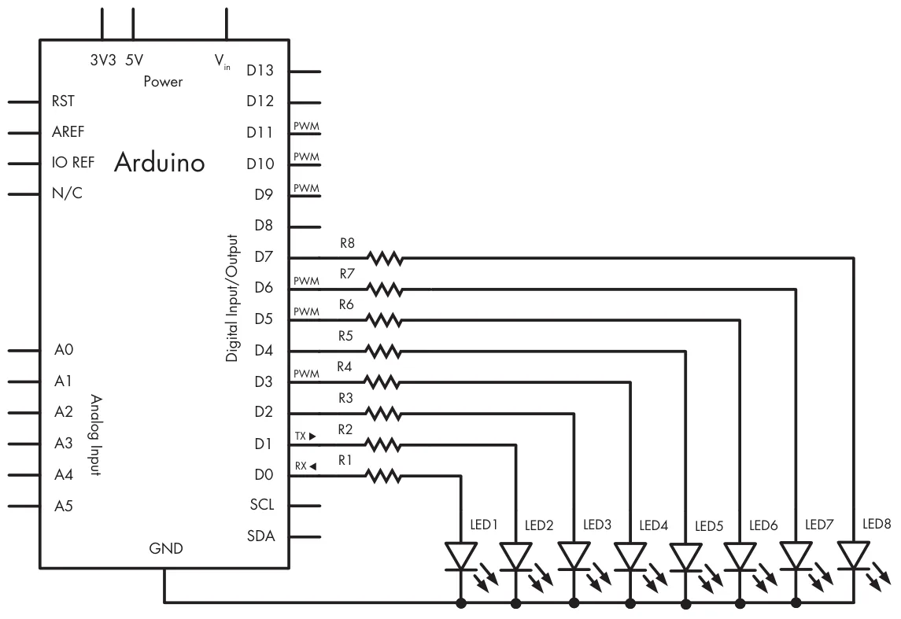
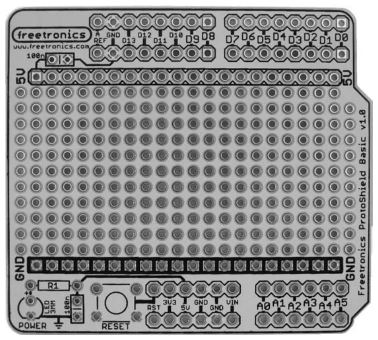
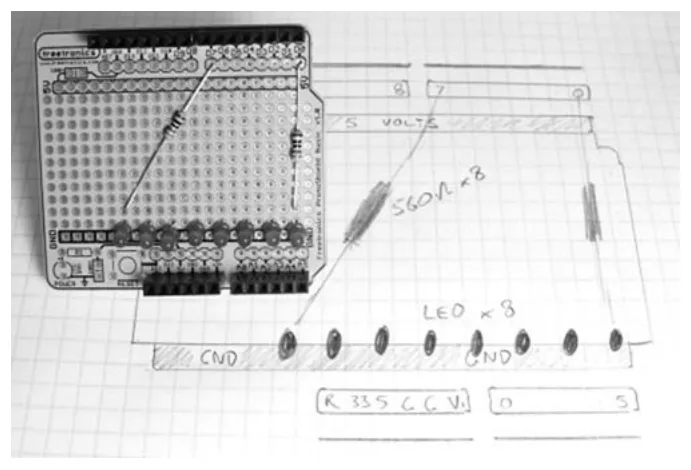
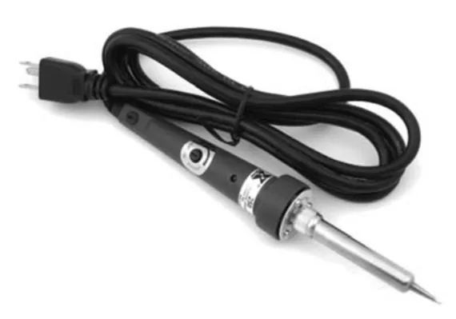
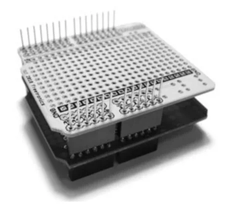
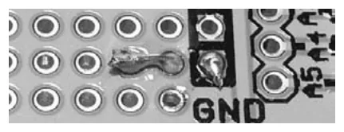
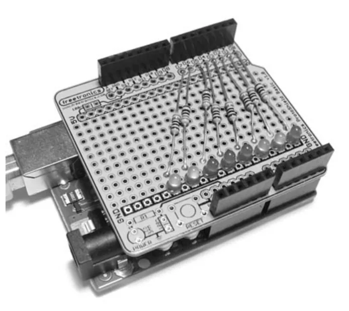

In this project, you’ll create a custom shield containing eight LEDs and current-limiting resistors. This custom shield will make it easy to experiment with LEDs on digital outputs.
The Hardware
The following hardware is required for this project:
- One blank Arduino ProtoShield
- Eight LEDs of any color
- Eight 560 Ω resistors (R1 to R8)
- Two 6-pin Arduino stackable headers
- Two 8-pin Arduino stackable headers
The Schematic
The circuit schematic is shown in Figure 8-7.

The Layout of the ProtoShield Board
The next step is to learn the layout of the holes on the ProtoShield. The rows and columns of holes on the ProtoShield should match those of the Arduino’s solderless board. On the blank ProtoShield shown in Figure 8-8, the designers have surrounded holes that are electrically connected with black lines.

The long horizontal line below the digital pins is connected to the 5V socket, and the horizontal line above the analog and other pins is connected to GND. The holes between the two lines are insulated from each other. Finally, there are two rows of pins: one at the very top of the ProtoShield and one at the very bottom. The top row consists of two groups of eight pins, and the bottom has two groups of six pins. This is where we solder the stackable headers that allow the ProtoShield to slot into the Arduino board.
The Design
Lay out your circuit using graph paper, as shown in Figure 8-9.

After you’ve drawn a plan for your circuit, test-fit the actual components into the ProtoShield to make sure that they’ll fit and that they aren’t too crowded. If the ProtoShield has space for a reset button, always include one, because the shield will block access to your Arduino’s RESET button.
Soldering the Components
Once you’re satisfied with the layout of the circuit on your ProtoShield and you have tested the circuit to make sure that it works, you can solder the components. Using a soldering iron is not that difficult, and you don’t need to buy an expensive soldering station for this type of work. A simple iron rated at 25–40 watts, like the one shown in Figure 8-10, should do it.



Figure 8-13 shows the finished product: a custom Arduino shield with eight LEDs.

Modifying the Custom Shield
We could use this simple shield in a more complicated project—for example, to monitor the status of digital pins 0 to 7. If we added another six resistors and LEDs, then we could monitor the entire digital output range. There are lots of different ways to use this shield. Just use your imagination!